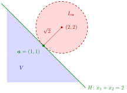

Minimum Characterized by Separation¶
Proposition¶
Let be a continuous quasi-convex function, let be a convex set with , and let . Write
for the set of points that are strictly better than . Then has a global minimum on at if and only if either or there exists a separating hyperplane of the sets and .
Interpretation¶
The point is optimal on exactly when no strictly better point lies in . For a continuous quasi-convex function this can be certified by a hyperplane with on one side and all better points on the other.

The figure is Example 1. For the set of better points is the open disc with centre and radius , drawn with a dashed boundary because it is open. The distance from the centre to the line equals the radius, so the disc touches only at , which is not itself in . The halfplane lies on one side of and on the other, so separates them and is a global minimum of on .
For "": if is a global minimum on , then and are disjoint. The set is convex, because it is the union of the nested sublevel sets with , each convex by quasi-convexity. So if it is nonempty, the separation theorem for disjoint convex sets gives a separating hyperplane. For "": is open because it is the preimage of the open interval under the continuous function . An open set on one side of a hyperplane cannot touch it, since a small ball around a touching point would cross over. So lies strictly on one side and on the other, hence .
Without quasi-convexity, can wrap around so that no hyperplane separates them although is optimal (Example 3); without continuity, can touch on the hyperplane (Example 4). The assumption only excludes : no hyperplane has all of on one side, so there the statement reduces to " is a global minimum if and only if ".
In pictures, is the region on the lower side of the level curve , and at the optimum this region just touches without overlapping it. This is the graphical method of OR Modelling, pushing the objective line until it last touches the feasible region, and the tangency picture behind Lagrange multipliers.
Key Results¶
- For continuous quasi-convex on , convex and : is a global minimum on if and only if or and have a separating hyperplane.
- The strict sublevel set of a quasi-convex function is convex, and it is open when is continuous.
- The direction "" follows from the separation of disjoint convex sets.
- In the direction "", a separating hyperplane cannot meet the open set , so it forces .
- means that is a global minimum of on all of .
Examples¶
1. A disc touching a halfplane. Let , which is convex and therefore quasi-convex, and . At we have , and is the open disc with centre and radius . The distance from to the line is , so the open disc lies in , and separates and . Hence is a global minimum of on , with value . For a convex set that contains , the minimizer would be itself, with : the first alternative.
2. A point that is not a minimum. In Example 1 take instead, with . Now is the open disc with centre and radius , which contains . A separating hyperplane cannot exist, because it would force ; this matches .
3. Quasi-convexity is needed. Let , which is continuous but not quasi-convex (its sublevel set is not convex), and . The point is a global minimum on with value . Here is nonempty and surrounds the disc. It contains points far out in every direction, so for every the function is unbounded above and below on , and no hyperplane has on one side and on the other: the direction "" fails.
4. Continuity is needed. On let for and for . Its sublevel sets are , or , so is quasi-convex, but it is not continuous at . Take and . Then , and the point , a hyperplane in , separates and . Yet is not a global minimum on , because and : the direction "" fails, since is not open and touches at .
Prerequisites¶
- Quasi-Convex Function
- Separating Hyperplane
- Separation of Disjoint Convex Sets
- Level Set and Level Curve
- Open and Closed Sets in a Metric Space
Related Concepts¶
- Local Minimum of a Convex Function
- Set of Minimizers of a Quasi-Convex Function
- Supporting Hyperplane
- Sublevel Sets of Convex Functions
- Lagrange Multiplier
- Graphical Method
Sources¶
- Math VI: Convexity and Optimization · Week 3
- H. E. Nusse and M. Dienstknecht, Math VI: Convexity and Optimization, lecture notes 2026–2027, Section 3.2
Aliases: separating hyperplane at a minimum, optimality by separation Keywords: {\boldsymbol{x}\in\mathbb{R}^n\colon f(\boldsymbol{x})<f(\boldsymbol{a})}, \mathbb{R}^n\setminus V\neq\varnothing, strict sublevel set, separating hyperplane of V and the better points, global minimum on a convex set Symbols: beta, element of, infinity, intersection, real numbers, square root, subset
Last updated: 5 November 2026 12:47
Minimum Characterized by SeparationQuasi-Convex FunctionSeparating HyperplaneSeparation of Disjoint Convex SetsLevel Set and Level CurveOpen and Closed Sets in a Metric SpaceLocal Minimum of a Convex FunctionSet of Minimizers of a Quasi-Convex FunctionSupporting HyperplaneSublevel Sets of Convex FunctionsLagrange MultiplierGraphical Method